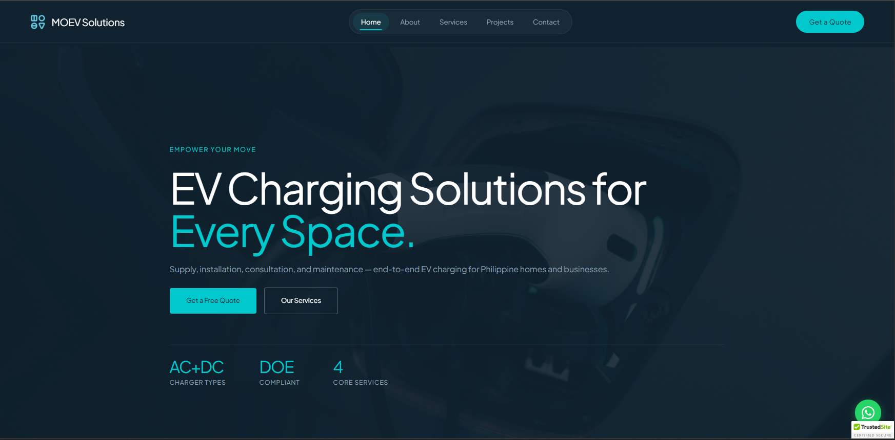
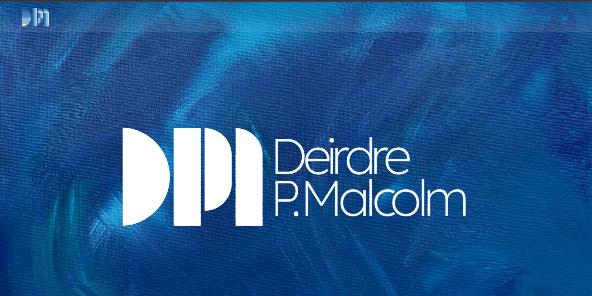
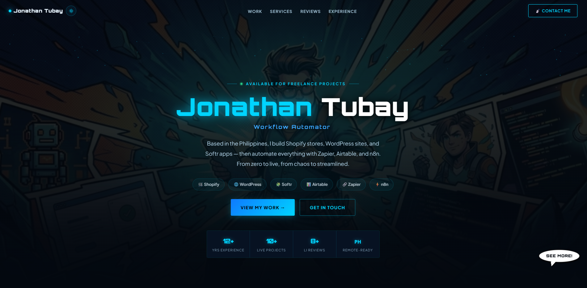
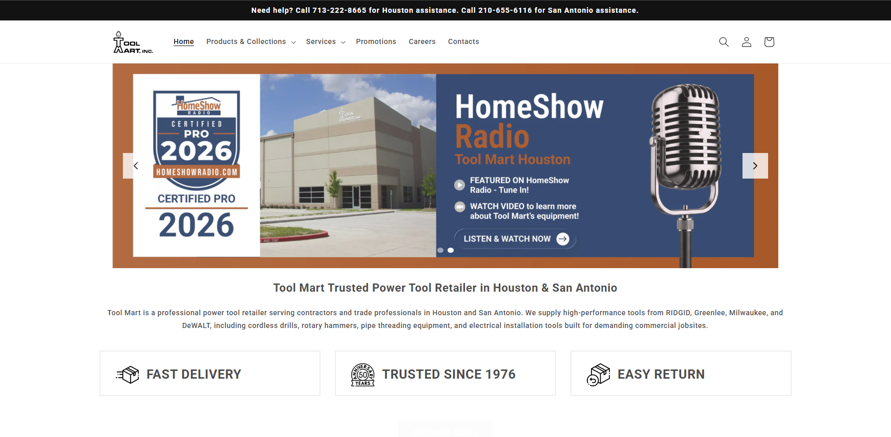
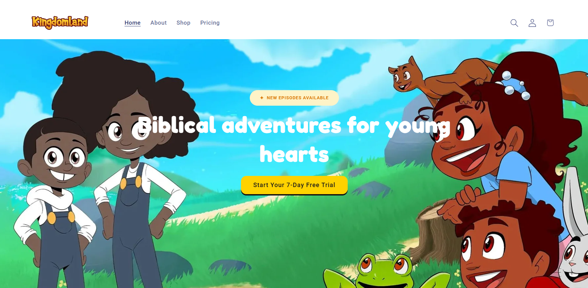
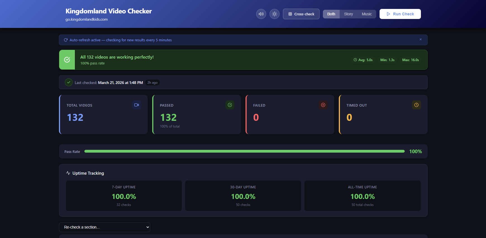
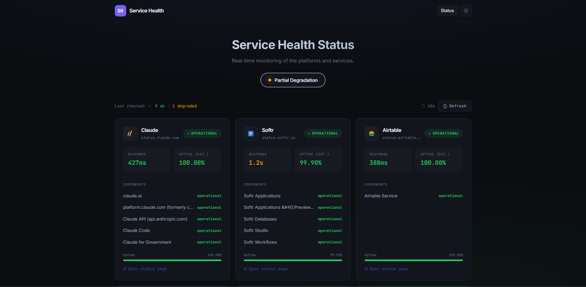
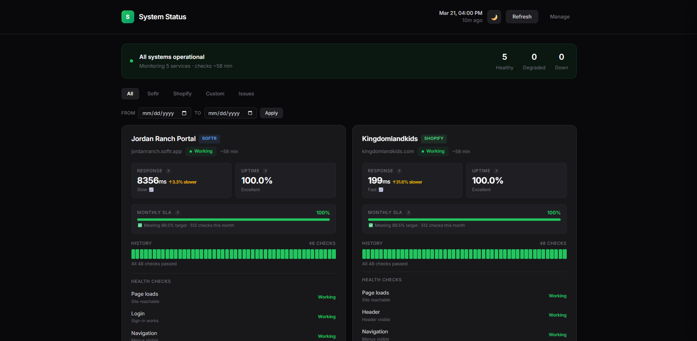

● LIVEMOEV Solutions
Full WordPress build for a Filipino EV charging startup — solo, end-to-end in 3 weeks.
Based in the Philippines, I build Shopify stores, WordPress sites, and Softr apps — then automate everything with Zapier, Airtable, and n8n. From zero to live, from chaos to streamlined.
From storefront to backend — I handle the full launch cycle.
Full Shopify & Plus builds for Philippine and international brands — theme, apps, catalog, payments, and post-launch support.
Custom sites and stores for local and global clients — from scratch or migration. Fast, mobile-ready, built to convert.
Airtable data → client portals, internal tools, and web apps with Softr.
Zapier, n8n, and Airtable automations for SMEs and growing eCommerce brands — eliminating manual work, saving hours weekly.
Agile delivery with Jira, Notion, Confluence — sprints, stakeholders, and teams on track.
Your technical point person — translating needs into action, managing timelines end-to-end.
What do you need?
Client stores delivered end-to-end, plus ops tools I built to keep everything running.

● LIVEFull WordPress build for a Filipino EV charging startup — solo, end-to-end in 3 weeks.

● LIVESquarespace takeover + eCommerce + Prodigi print-on-demand for a UK artist.

● LIVEHand-coded from scratch — zero frameworks, particle FX, full dark/light theme.

● LIVEB2B Shopify store with Zapier & Airtable automation for a Houston hardware retailer.

Conversion-focused Shopify Plus storefront for a children's media brand — ongoing.

Playwright automation monitoring 132+ videos with a real-time dashboard and push alerts.

Real-time uptime monitor for 11 services with instant Slack degradation alerts.

Playwright checks on GitHub Actions schedule — logs to Airtable, alerts via Slack & email.
Real feedback from clients and LinkedIn recommendations from colleagues and managers.
"I had the pleasure of working with Jonathan during the process of setting up my website and eCommerce section for my paintings. He has been more than helpful throughout my journey, friendly and pleasant, a man of total integrity and entirely trustworthy. No question I posed was left unanswered and no changes or amendments were a problem. I would highly recommend Jonathan — the speed, efficiency and quality of his work, his constant feedback and pride in his job was clear. I am proud to have had him involved in my website development."
"Working with Jonathan on our website was an excellent experience from start to finish. He was consistently professional, proactive in his approach, and always delivered on time. Throughout the process, he communicated clearly and made sure our needs were understood and met. The final website he presented exceeded our expectations — not only in design but also in functionality and overall user experience. Since launching, we've received great feedback and positive reviews from our clients and partners. We highly recommend Jonathan to anyone looking for a reliable and talented web developer."
"Jonathan is a great person to have in your team. He has the right attitude, is reliable and truly treats his teammates as family. He's highly regarded — please don't hesitate to contact me if you're after a referral."
"I worked with Jonathan for a year and a half and found him to be a very eager and enjoyable person to work with. Always willing to learn and always up for a challenge."
"Jonathan is a hardworking and dedicated developer. His communication and commitment are fantastic. He has a great nature and is very keen to help where he can. He is an asset."
"Jonathan is an excellent person to work with. He was quick to take charge of his team when the opportunity presented itself. Always willing to help a helping hand and very adaptable."
"I was very impressed by how quickly Jonathan was able to add value — understanding the product almost immediately and suggesting improvements within the first few days. Always friendly, professional and easy to work with."
"Jonathan is a very competent and diligent engineer. A good team player who always takes the initiative to lead. Has a fun and easy going attitude and is a pleasure to work with. I highly recommend him."
"Jonathan has solid work ethic. He consistently demonstrated his passion for problem solving. I have no doubts in his technical skills."
"Jojo is a ray of sunshine in the team. His positivity is contagious. He is focused and result-oriented, always ready to roll up his sleeves and blow everyone away with his amazing work."
"It was a pleasure to work with Jonathan, who led the offshore support team for our product! He brought great energy and leadership to the role every single day."
12+ years across operations, project leadership, and technical delivery.
Sometimes the right leader changes everything.
"Before Nick, I was going through the motions. He gave me real ownership — Shopify builds, automation pipelines, critical releases — and never once questioned whether I could handle it. That environment made me want to go further. I started building tools on my own initiative, just because I finally felt like my work mattered. That's what a great leader does — not push you forward, but make you want to move yourself."
Based in Las Piñas City, Philippines and open to remote projects worldwide. Need a Shopify store, WordPress site, or workflow automation? Reach out directly or hit the button below to send me a message.
I respond quickly and keep communication clear throughout every project. Fill in the form and I'll be in touch within 24 hours.